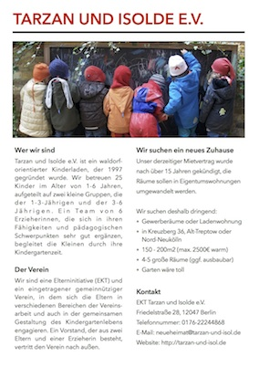

Aktuelles — DRINGEND
Wir suchen ein neues Zuhause!
Die Räume in der Friedelstraße, die wir derzeit bewohnen, wurden uns nach über 15 Jahren gekündigt, weil sie verkauft werden sollen. Deshalb suchen wir nun nach einem neuen Zuhause.
Die Kita bietet Platz für 25 Kinder zwischen 1 und 6 Jahren und ist der Arbeitsplatz von 6 Erzieherinnen. Wir suchen 150–200 m2große Gewerberäume oder eine Ladenwohnung in Kreuzberg 36, Nord-Neukölln oder Alt-Treptow. Weitere Details enthält unser Flyer:

Für jeden Hinweis und Tipp sind wir sehr dankbar.
(Kontakt: neueheimat@tarzan-und-isol.de oder 0176/22244868)
Wir über uns
Tarzan und Isolde e.V. ist ein waldorforientierter Kinderladen, der 1997 gegründet wurde. Wir betreuen 25 Kinder im Alter von 1 bis 6 Jahren, aufgeteilt auf zwei Gruppen, die der 1- bis 3-jährigen und der 3- bis 6-jährigen. Ein Team von 6 Erzieherinnen, die sich in ihren Fähigkeiten und pädagogischen Schwerpunkten sehr gut ergänzen, begleitet die Kleinen durch ihre Kindergartenzeit.
Wir sind eine Elterninitiative (EKT) und ein gut funktionierender eingetragener gemeinnütziger Verein, sodass die Eltern sich in verschiedenen Bereichen der Vereinsarbeit und auch in der gemeinsamen Gestaltung des Kindergartenlebens engagieren. Ein Vorstand, der aus zwei Eltern und einer Erzieherin besteht, vertritt den Verein nach außen.
Kitaplatzsuche
Für den Sommer 2014 sind alle neuen Plätze bereits belegt, auch für den Sommer 2015 können wir aufgrund vieler Geschwisterkinder keinen neuen Platz anbieten.